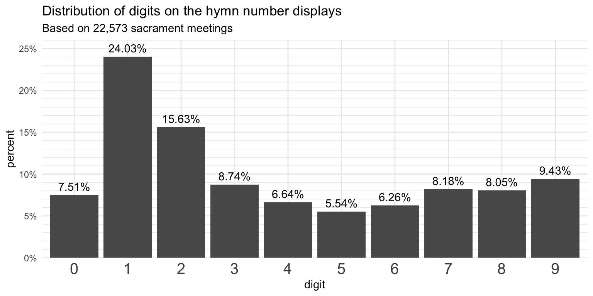
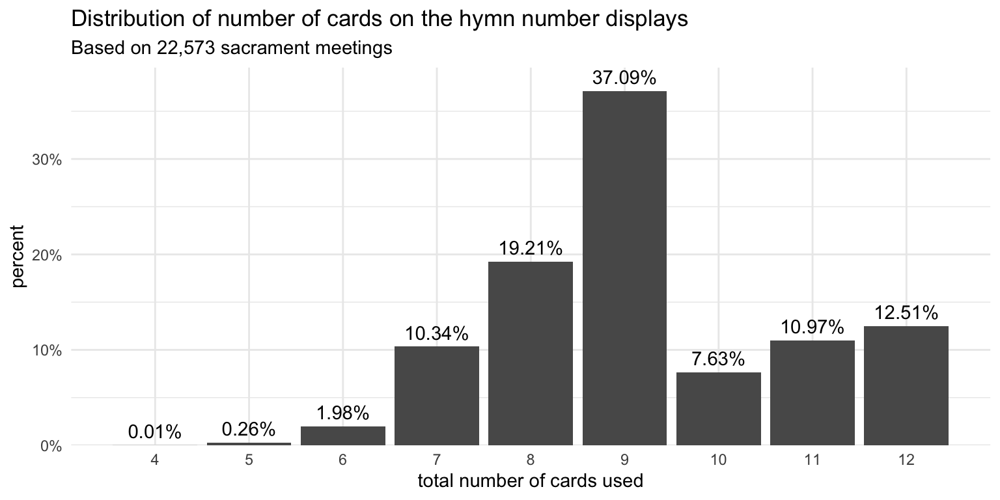
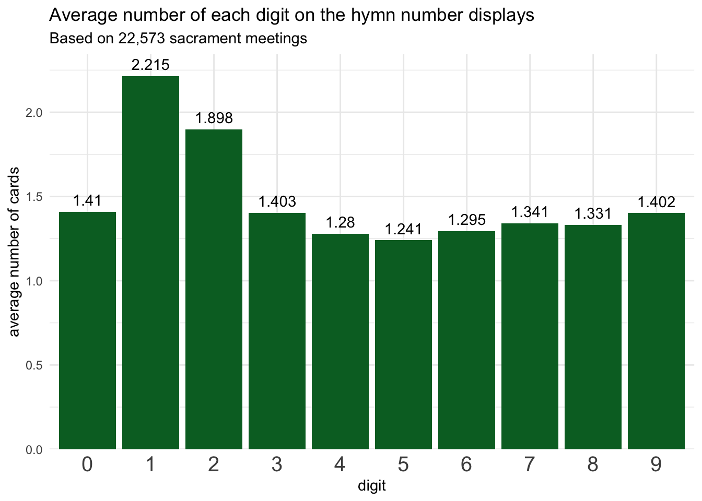
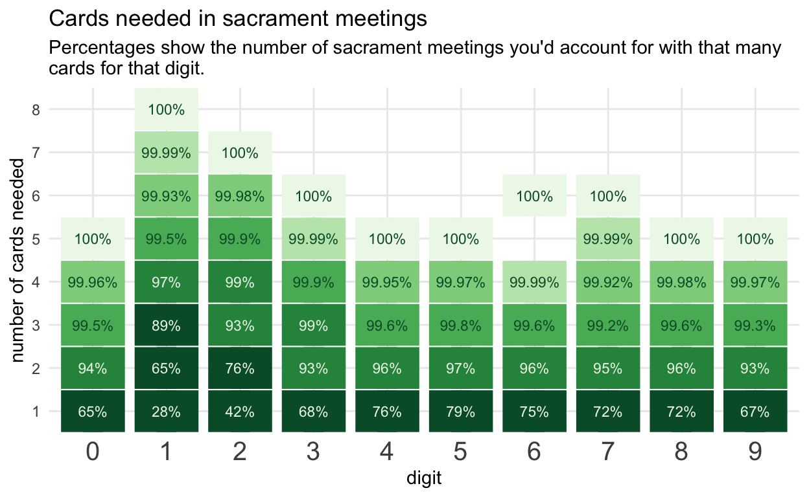

| digit | percent |
|---|---|
| 0 | 7.51% |
| 1 | 24.03% |
| 2 | 15.63% |
| 3 | 8.74% |
| 4 | 6.64% |
| 5 | 5.54% |
| 6 | 6.26% |
| 7 | 8.18% |
| 8 | 8.05% |
| 9 | 9.43% |
How many of each card should a ward have?
general
I’ve never had a calling where I was the one to put the cards on the display to show the hymn numbers. But, with the data I have, I can now provide some recommendations on how many of each digit a pack of cards has because have a pretty good idea of how many cards wards have had to use. So, let’s take a look at what we can learn. This post is based on data from 22,573 wards prior to June 2 when the new hymns were released since those 1000s throw everything off!
Number of digits on display
First, let’s take a look at the distribution of numbers across all the hymns in these sacrament meetings. This table shows what percentage of the cards displayed belonged to each number.
It shouldn’t come as too much of a surprise that the most common digit is 1. After all, the sacrament hymns all include at least one of them. I guess what’s surprising is just how much more common it is. It’s almost five times as common as 5 for some reason. We can plot these numbers. Here’s a plot to show these visually, which highlights the difference between them. Interestingly, the numbers 7–9 are slightly more common, probably because they’re used in the sacrament hymns which are hymns 169–196.

Which digits are most common?
So now what we can do is rather than look at all the data at once, we could look at each sacrament meeting individually. If a quarter of the cards used are 1s, and the most number of cards used on a typical sacrament meeting is twelve (four hymns, each with three digits), then about three of them are predicted to be 1s. Let’s see what the data actually shows though.
First off, the following plot shows the distribution how many cards are used each week. About 37% of meetings have nine digits on display. You’d see this if you didn’t sing an intermediate hymn and all three hymns that were sung were hymn 100–341. Another 19% have eight digits, which would mean one of the three hymns is between 11 and 99. Just a few wards only displayed five digits, which happens when the opening and closing hymn are between 1 and 9 and a typical sacrament hymn.

The plot above shows that, once in a very great while, you might see a sacrament meeting with only four cards used. This happened twice in my dataset. Both from the same ward in American Fork in March 2021. On one week, they sang 1 and 9. That means only four digits were on display. Pretty cool. Not sure what was going on in that ward, but it’s pretty cool that I caught it happening.
Going back to the individual digits, we can now go back and see how many of each are on display each week in a ward. I looked through all the sacrament meetings I have data from, and counted up how many of each digit was on display. I then took the average across all meetings. Those averages are displayed in this plot below. I know it’s nonsensical to think of 2.2 cards, but these are averages after all.

How many cards of each digit do we need?
The above plot is the same as the one above that showed the proportion of numbers on display across all meetings. So, let’s make it more useful. What if we consider a different question. How many copies of each digit should come in a standard pack distributed by the church? You probably don’t need twelve of each number because you’re never going to sing hymn 111 four times. But you want more than what the numbers in the above plot show, because it means half the time you won’t have enough. The following plot shows how many cards you’d need to have enough to display the hymns used in the sacrament meetings I have data from.

For the 1s, yes, there was a sacrament meeting that used a whopping eight of them. It was a ward in Maryland in 2017 and they sang 1s. They could theoretically have had a ninth 1 if they had sung
Two sacrament meetings used seven 2s. This was mostly done by singing multiple hymns in the 220–229 range. But the most possible I suppose would be eight, if you sang the rather unusual hymn 2, and two others each with two 2s. I saw six threes one time; it was around the 4th of July and they sang 3 in it. Unless you’re singing the Men’s Choir version of
Because we don’t have hymns 444, 555, etc., you can’t get as many of the other digits. For 4s–9s, you could in theory sing something like 44, 174, 144, and 244, which would be seven, but that would be pretty unusual. The closest I had to maxing out one of these other digits a ward in St. George that sang 6s. (No other ward has come close with even five 6s!) The other was a ward in 2022 in Maryland that had six 7s by singing 0s, 4s,5s,8s, or9`s.
So how many cards should we put in a pack?
In my building, there are six cards for each number. I don’t know if that’s a standard set you’d get from Distribution, but it’s probably similar to many other buildings. While it’s theoretically possible to use all six of the higher numbers, as we’ve seen so far, that is extremely rare. Less than one in 22,573 sacrament meetings. I’ll bet we could get away with putting only five cards for the numbers 4–9 and hardly anyone would ever need more than that. Even three just three of each card would be good 99.2% of the time, which means you’d run out of cards about once in two and a half years! With four, you’d be good except maybe one sacrament meeting every 25 years.
However, though still extremely rare, I do have instances of wards that would have run out of some numbers. In just 14 sacrament meetings (0.06%), a ward needed more than six 1s. And in two sacrament meetings (0.009%), they ran out of 2s.
So, I wonder if we should distribute maybe four 4–9s and 0s, five 3s, and seven 1-2s. That’d be a 13 fewer cards than what comes in a standard pack now and it would still cover almost everything that I’ve seen.
Of course all this goes out the window with the new hymns because they’re temporarily in the thousands, so we’ll need more 1s and 0s. And when the next hymnal comes out, all the numbers will be adjusted again depending on how many hymns we have (we’ll most likely have a hymn 444 for example) and where within the hymnal the sacrament hymns are (I’m thinking in the 200–250 range most likely).